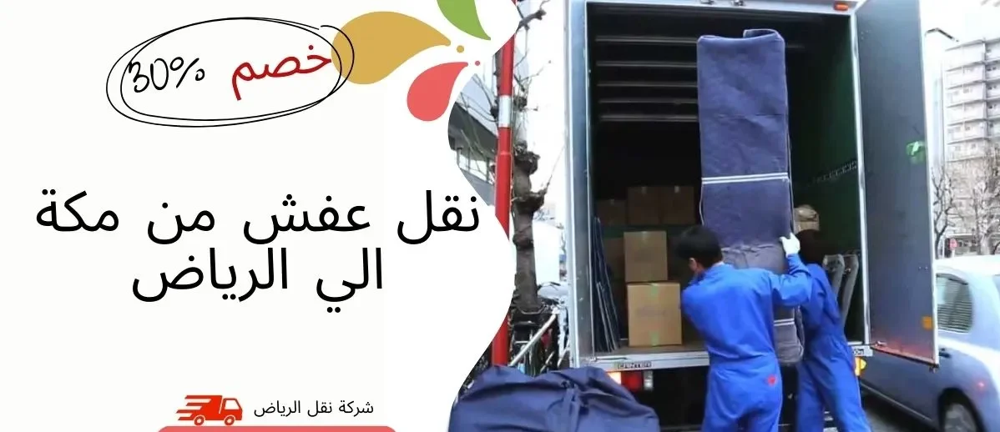

نقل عفش من مكة للرياض

يبحث الكثير من الأشخاص عن شركات نقل عفش من مكة للرياض موثوقة، وذلك لأهمية التنقل بين المدينتين سواء كان النقل بغرض العمل أو بغرض السكن، هناك شركات موثوقة تقدم هذه الخدمة مثل شركة نقل الرياض وتوفر خدمات متكاملة تشمل فك وتركيب الأثاث، التغليف بأجود أنواع الخامات، والنق بسيارات مجهزة لنقل العفش بأمان دون حدوث تلفيات أو خدوش، تُعد شركة نقل الرياض أفضل الشركات التي يُمكنك الاعتماد عليها للحصول على خدمة نقل عفش من مكة للرياض بأمان كامل، لا تتردد وتواصل الأن مع الشركة لتوفير وقتك وجهدك و لتحصل على تجربة نقل مريحة وآمنة، للتواصل اضغط على ايقونة الواتس اب.
خطوات نقل عفش من مكة للرياض
عملية نقل العفش تتطلب اتباع بعض الخطوات اللازمة لضمان أن عملية النقل تتم بأمان، إليك أهم خطوات عملية نقل عفش من مكة الي الرياض:
- التخطيط المسبق
قبل البدء في عملية النقل، يجب التخطيط وتجهيز قائمة بالأثاث والأغراض المطلوب نقلها من مكة إلى الرياض، مما يساعد الشركة في تحديد حجم السيارة وعدد العمالة اللازمة، ويوفر عليك الوقت والجهد. - التواصل مع شركة متخصصة
اختيار شركة نقل عفش موثوقة مثل شركة نقل الرياض خطوة أساسية لضمان أن عملية النقل تتم دون حدوث تلفيات، توفر الشركة خدمات شاملة تشمل الفك، التغليف، النقل، والتركيب، مع ضمان سلامة الأثاث أثناء الرحلة الطويلة بين مكة والرياض. - فك الأثاث والأجهزة
يقوم فريق شركة نقل الرياض بفك غرف النوم، المكاتب، المطابخ، والمكيفات بطريقة آمنة للحفاظ على جميع القطع بدون خدوش أو أعطال. - التغليف الاحترافي
يتم استخدام مواد تغليف بأعلى جودة مثل الكراتين المقواة، الفقاعات الهوائية، والأشرطة اللاصقة لحماية الأثاث والأجهزة الكهربائية من الصدمات أو الكسر أثناء النقل لمسافة طويلة من مكة للرياض. - تحميل العفش في السيارات المجهزة
تُنقل الأغراض بعناية إلى سيارات حديثة ومغطاة، مجهزة بوسائل تثبيت لحماية الأثاث من الاهتزاز أو التحرك خلال الطريق. - النقل من مكة إلى الرياض
يتم السير عبر طرق آمنة وسريعة للوصول إلى الرياض في الموعد المحدد مع متابعة حركة النقل بشكل منظم. - التفريغ والتركيب
عند الوصول، يقوم الفريق بإنزال العفش من السيارة وتركيبه في المكان الجديد كما كان في مكة، مع إعادة تشغيل المكيفات والأجهزة المنزلية إذا كانت ضمن الخدمة.
هذه الخطوات تضمن أن نقل عفش من مكة للرياض تتم دون حدوث أي أخطاء في النقل، تهتم شركة نقل الرياض بكافة هذه التفاصيل وأكثر، لذلك هي تُعد خيارًا مثاليًا لك ولأسرتك لنقل عفش من مكة الي الرياض.
مميزات شركات نقل عفش من مكة للرياض
شركة نقل الرياض هي من أفضل شركات نقل عفش من مكة للرياض وذلك لأن الشركة تمتلك العديد من المميزات، لنتعرف بشئ منها:
- تمتلك الشركة خبرة مهنية عالية وفنيين مدربين على أعلى مستوى على جميع خدمات نقل العفش مثل الفك والتركيب والتحميل والتفريغ مما يضمن لك عملية نقل آمنة دون حدوث أي خدوش.
- تمتلك الشركة أسطول من السيارات المجهزة والتي بها أدوات تثبيت لمنع تحرك أو انزلاق الأثاث أثناء النقل.
- تستخدم الشركة في عملية التغليف أجود أنواع الخامات مثل استرتش، كراتين مقواة، ووسائل لحماية الأثاث الزجاجي، مما يضمن وصل العفش بأمان.
- تقدم الشركة خدمات متكاملة تشمل الفك، التركيب، التغليف، النقل، كما أنها قد تقدم خدمات إضافية مثل صيانة خفيفة للأثاث والتنظيف في حالة طلب العميل ذلك.
- تتميز الشركة بالالتزام بالمواعيد ووضع خطط زمنية واضحة للعملاء.
- تُعتبر أسعار نقل عفش من مكة للرياض منخفضة في شركة نقل الرياض.
- تضم الشركة خدمة عملاء مميزة ودعم فني لتقديم الاستشارات والرد على استفسارات العملاء.
خطوات نقل عفش من مكة إلى الرياض بطريقة آمنة
الشركات الموثوقة مثل شركة نقل الرياض تتبع خطوات نقل عفش من مكة للرياض للنقل بطريقة آمنة، إليك هذه الخطوات:
- تقييم حجم العفش بدقة
يقوم فريق شركة نقل الرياض بمعاينة العفش لتحديد حجم الشاحنة المناسبة ونوع التغليف المطلوب، مما يقلل من المخاطر أثناء عملية النقل. - تصنيف الأغراض حسب النوع
يتم فصل الأثاث الخشبي عن الأجهزة الكهربائية والتحف الزجاجية، بحيث يُخصص لكل نوع أسلوب تغليف مختلف يحافظ على سلامته. - استخدام أدوات رفع متخصصة
في حال وجود أثاث ثقيل أو نقل من الأدوار العليا، تُستخدم الأوناش والرافعات لتجنب الكسر أو الخدوش الناتجة عن النقل اليدوي التقليدي. - تثبيت الأثاث داخل الشاحنة
بعد التحميل، يتم ربط العفش بالأحزمة وتثبيته باستخدام قواعد مطاطية تمنع الحركة أو الاهتزاز أثناء الطريق الطويل من مكة إلى الرياض. - اختيار مسار آمن ومناسب
يعتمد السائق على طرق سريعة وآمنة بعيدًا عن الازدحام أو الطرق الوعرة، مما يضمن وصول الأثاث في الموعد المحدد بدون تعرضه للتلف. - المتابعة المستمرة أثناء النقل
شركة نقل الرياض قد توفر متابعة عبر الهاتف أو تحديد الموقع GPS، بحيث يكون العميل على علم بمكان العفش طوال الرحلة. - الفحص بعد الوصول
عند إنزال العفش في الرياض، يتم فحص جميع القطع والتأكد من سلامتها قبل تركيبها في المكان الجديد، مع إصلاح أو معالجة أي خلل بسيط قد يحدث.
لا تتردد واطلب خدمة نقل عفش من مكة للرياض من شركة نقل الرياض أفضل شركات نقل عفش من مكة للرياض، للتواصل اضغط على ايقونة الواتس اب.
نقل
عفش جنوب الرياض
شركة نقل عفش جنوب الرياض
دينا
نقل عفش حي السويدي
كيف تختار أفضل شركة نقل عفش من مكة للرياض؟
يجب اختيار شركات نقل عفش من مكة للرياض بدقة عالية، وذلك لأنها تضمن سلامة ممتلكاتك أثناء النقل، عند البحث عن شركة نقل عفش من مكة للرياض يجب أولًا التأكد من خبرة الشركة في مجال نقل العفش، والتأكد من أن الشركة تمتلك فنيين مدربين على خدمات نقل العفش مثل الفك والتركيب، كما يجب عليك التحقق من مستوى السيارات التي تمتلكها الشركة والتأكد من مدى جاهزيتها للنقل لمسافات طويلة، يجب اختيار شركة تستخدم أدوات تغليف بجودة عالية ومواد مخصصة لكل أنواع العفش لحماية أغراضك من أي صدمات أو خدوش.
أسعار وخدمات نقل العفش بين مكة والرياض
لا يُمكن تحديد سعر ثابت لخدمة نقل عفش من مكة للرياض، وذلك لأنها تختلف باختلاف عدة عوامل منها حجم الأثاث والخدمات المطلوبة هل نقل عفش فقط أم فك وتركيب وتغليف، كلما زادت كمية العفش والخدمات المطلوبة زادت تكلفة العملية، هناك شركات مثل شركة نقل الرياض تقدم باقات شامل بأسعار تنافسية تشمل الخدمات الأساسية مثل فك وتركيب العفش، التحميل والتفريغ، توفير سيارة مجهزة لنقل العفش بأماتن، بالإضافة إلى ذلك فإن المسافة من المكان القديم إلى الجديد تؤثر أيضًا على تكلفة العفش، لذلك ننصحك بالتواصل المباشر مع شركة نقل الرياض أفضل شركات نقل عفش من مكة للرياض للحصول على أسعار شفافة لنقل عفشك، للتواصل اضغط على أيقونة واتس اب.
كيفية طلب خدمة نقل عفش من مكة للرياض
لطلب خدمة نقل عفش من مكة للرياض توفر شركة نقل الرياض وسائل سهلة للتواصل، حيث يُمكنك التواصل مع الشركة بسهولة بالضغط على أيقونة الواتس اب أمامك، بعد ذلك تطلب الشركة منك بيانات الشخصية مثل موقع النقل الحالي والجديد، عدد قطع الأثاث، الخدمات المطلوبة، ثم بعد ذلك تحدد الشركة تكلفة عملية النقل.
في نهاية المطاف، يجب اختيار شركات نقل عفش من مكة للرياض موثوق بها مثل شركة نقل الرياض، لتضمن لك الحصول على تجربة نقل مريحة وآمنة دون حدوث أي خدوش أو تلفيات في الأثاث، تقدم شركة نقل الرياض لك خدمات متكاملة تشمل النقل والتحميل والتفريغ والتركيب في المكان الجديد، لا تتردد وتواصل الآن مع الشركة من خلال الضغط على أيقونة الواتس اب.
الأسئلة الشائعة حول نقل العفش من مكة للرياض
ما هي أسعار شركات العفش في مكة؟
تختلف أسعار شركات النقل وفقًا لعدة عوامل منها: حجة الأثاث، عدد القطع المطلوب نقلها، المسافة بين المكان القديم والجديد، الخدمات المطلوبة، لذلك لا يُمكن أن نحدد لك سعر ثابت.
ما هي أفضل ونيت نقل عفش في مكة؟
أفضل ونيت نقل عفش في مكة هو الذي توفره الشركات المتخصصة مثل شركة نقل الرياض والأفضل لنقل العفش، حيث تتميز بسيارات مجهزة، عمالة مدربة، وخدمات شاملة تشمل الفك، التغليف، والنقل بأمان والتزام بالمواعيد.